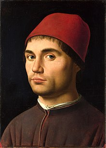

Sant Jeroni
Galeria
Formulari
Creador
Inici
Descripció
Es tracta d'un quadre de mida petita que descriu a sant Jeroni, doctor de l'Església, que va traduir la Bíblia al llatí, treballant al seu estudi. Va vestit com un cardenal, títol pòstum que li va ser atorgat per l'església tenint en compte el seu paper en vida com a conseller del papa Damas I. Abans de realitzar la Vulgata, sant Jeroni va estar errant durant tres anys pel desert de Síria. Allà va domesticar un lleó després de treure-li una espina de la pota. Aquest animal apareix passejant per la nau del que sembla una església, edifici que emmarca l'escena. L'església ofereix un marc simbòlic que es veu reforçat per diversos objectes i animals que fan referència al al·legòricament a la veritat continguda en la Bíblia. Antonello dóna Messina va ser el primer pintor de la Itàlia meridional que va fusionar la tradició flamenca amb la italiana. L'humanisme toscà s'aprecia en l'organització espacial del quadre segons les lleis de la perspectiva, visible en les dues naus laterals de l'església i remarcada per les rajoles i els focus de llum. La tradició flamenca del seu mestre Colantonio es veu en la descripció minuciosa dels objectes, en el tractament a vista d'ocell del paisatge i el realisme de l'escena.
Autor
Antonello di Giovanni d'Antonio anomenat Antonello dóna Messina. (Ca. 1430 en els voltants de Messina - 1479, Messina) va ser un pintor quatrecentista italià. Nascut a Sicília, està considerat com un dels introductors de les tècniques pictòriques amb oli a Itàlia. Integrant d'una família del gremi d'artesans cinceladores (mazoni), molt aviat va evolucionar cap a les belles arts, destacant-se com el pintor que reuneix la cultura luminística atmosfèrica dels pintors flamencs amb la cultura monumental-perspectivista italiana.
Retrat de Antonello di Giovanni

Zoom obra